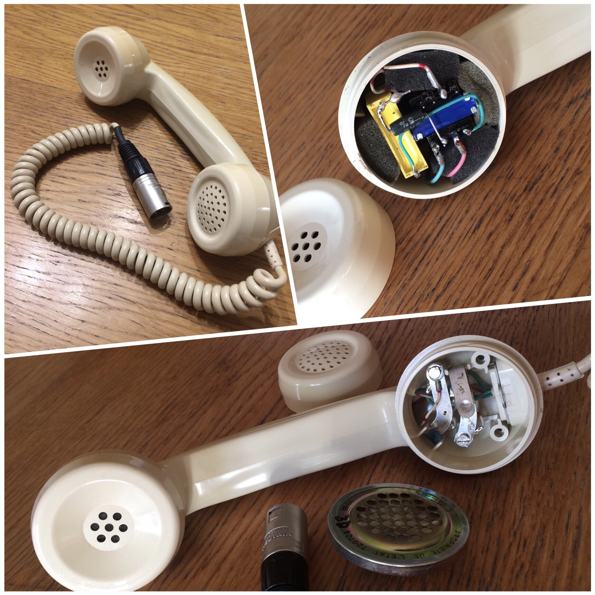
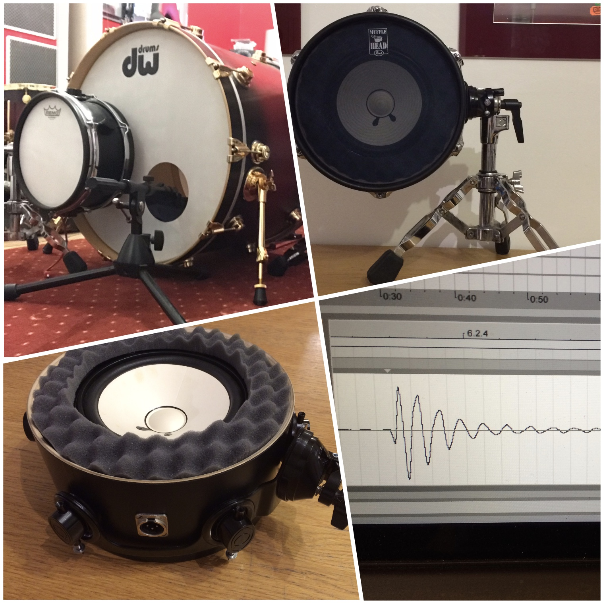

Passionné par la production de son, il monte récemment un studio d'enregistrement appelé "SoundAreaStudio".Equipé d'une régie, d'une cabine de prise de son, et d'un systeme numérique adapté. Le gout pour le "sur mesure" l'amène à fabriquer ses propres microphones spécialisés.

